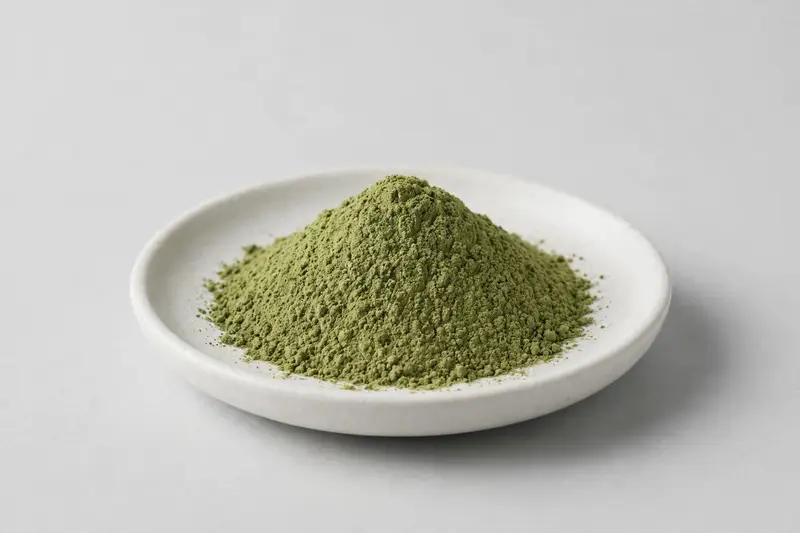

Pandan leaf — natural flavour and colour extract for food and beverage.

Overview
Pandan leaf extract is a botanical powder obtained from the leaves of Pandanus amaryllifolius, valued for its distinctive aromatic note and its contribution to natural colour in food and beverage systems. Demand is driven largely by Southeast Asian-inspired flavour launches, bakery concepts and ready-to-drink beverages. Buyers typically define the extract by ratio, carrier and colour intensity rather than a single marker compound. As a Xi'an-based trading company, we source through vetted partner producers and confirm honestly whether a requested ratio and format are achievable.
Specifications below reflect commonly requested options in the market — not a stock list. Share your target spec and we'll confirm exactly what we can supply, honestly.
| Specification | Details |
|---|---|
| Botanical identity | Pandan leaf extract powder (Pandanus amaryllifolius) |
| Marker compound | Commonly requested spec grades: extract ratios such as 4:1 to 20:1, or standardised to a declared colour or aroma intensity agreed with the buyer. |
| Appearance | Medium green fine powder |
| Mesh size | Typically 80–100 mesh (confirm per inquiry) |
| Testing | COA/TDS arranged on request; scope agreed per your spec |
Applications
Documentation
We don't claim in-house labs or certifications we don't hold. COA and TDS documents can be arranged on request, and testing scope is agreed against your specification before supply.
FAQ
Related products
Rehmannia glutinosa
Key marker: 10:1 or catalpol
View specs →Camellia sinensis (pu-erh)
Key marker: Polyphenols / theabrownins
View specs →Arctium lappa
Key marker: 10:1 or inulin
View specs →Actinidia deliciosa
Key marker: Vitamin C standardised
View specs →Medicago sativa
Key marker: Chlorophyll grades
View specs →Send your target spec and volumes — we'll respond with a tailored quotation.
Request a Quote